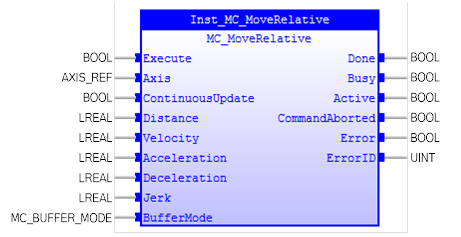
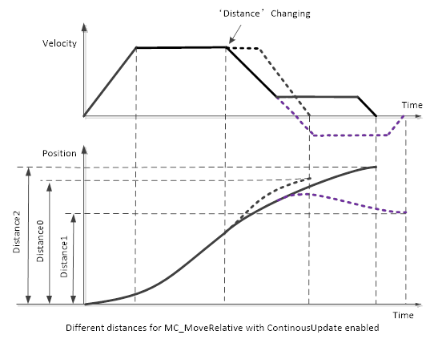
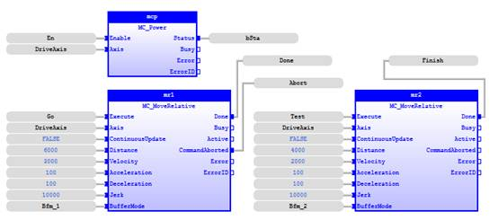
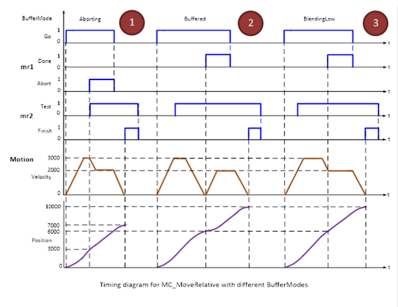
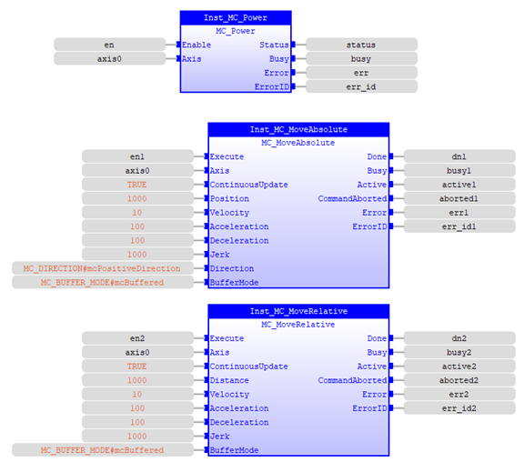
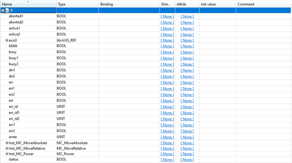

MC_MoveRelative
Commands a controlled motion of a specified distance relative
to the position at time of the execution.

Description:
MC_MoveRelative commands a controlled motion of a specified
distance relative to the position at time of the execution.
If input ‘Velocity’ is set to zero, it will report an error
at the rising edge of ‘Execute’.
If input ‘Acceleration’, ‘Deceleration’, and ‘Jerk’ are
zero, these values will be set to the maximum values.
Input parameter ‘Jerk’ can be used to accelerate or
decelerate smoothly.
MC_MoveRelative supports ‘ContinousUpdate’ functionality.
This means that the input ‘Distance’ can be changed during positioning.
If the ‘ContinuousUpdate’ is enabled and inputs are
available, the destination position will change, but NOT the starting point for
‘Distance’. For example, an axis motion is started with MC_MoveRelative when the
axis is stopped (not in motion). The values of ‘Distance0’, ‘Distance1’, ‘Distance2’
for input ‘Distance’ are assumed to be positive, and ‘Distance2’ > ‘Distance0’
> ‘Distance1’).
The black bold dash line shows the normal motion without any
inputs changing after starting motion. The purple bold dash line shows the
motion is changed with a smaller input distance ‘Distance1’ and different
acceleration input parameters. The black bold line shows the motion is changed
with a larger input distance ‘Distance2’.

The example above shows that the starting position for ‘Distance’
will not change if the new ‘Distance’ input is given before the previous
relative distance has finished.
The following figure demonstrates the behaviour of 3
different ‘BufferMode’ setup on 2 MC_MoveAbsolute connection:


-
‘BufferMode’
= mcAborting: the left part of timing diagram illustrates the case if the 2
nd
move FB starts the execution while the 1
st one is still executing.
In this case the 1
st motion is interrupted and aborted by the ‘Test’
signal during the constant velocity of the 1
st FB at position 3000.
The 2
nd FB will move 4000 distance to the target position7000.
-
‘BufferMode’
= mcBuffered: the middle part of the timing diagram illustrates the case if the
2
nd move FB starts the execution while the 1
st one is
still executing. In this case, the 1
st motion will not be
interrupted. The 2
nd motion waits until the 1
st motion
completed the position 6000 with velocity zero, and then starts to move 4000
distance to target position 10000.
-
‘BufferMode’
= mcBlendingLow: the right part of the timing diagram illustrates the case if
the 2
nd move FB starts the execution while the 1
st one is
still executing. In this case, the 1
st motion will not be
interrupted. The 2
nd motion waits until the 1
st motion
completed the position 6000 with special velocity 2000.
Make sure the input and output parameters are of data type
indicated in the table below.
If this command is aborted, the untraveled distance will be abandoned.
This action completes with velocity zero if no further actions
are pending.
This FB can be executed when the axis state is ‘Synchronized
Motion’, ‘Discrete Motion’, ‘Continuous Motion’ or ‘Standstill’. Otherwise, it
will generate an error.
Inputs/Outputs:
|
Name
|
Data Type
|
Description
|
|
INPUTS
|
|
Execute
|
BOOL
|
Start the motion at rising edge
|
|
Axis
|
AXIS_REF
|
Reference to the axis
|
|
ContinuousUpdate
|
BOOL
|
TRUE:
when the function block is triggered (rising ‘Execute’), it will - as long
as it stays TRUE – make the function block use the current values of the
input variables and apply it to the ongoing movement.
FALSE: with the rising edge of the
‘Execute’ input, a change in the input parameters is ignored during the whole
movement.
|
|
Distance
|
LREAL
|
Relative distance for the motion (in
technical unit [u])
|
|
Velocity
|
LREAL
|
Value of the maximum ‘Velocity’ (not
necessarily reached) [u/s]
|
|
Acceleration
|
LREAL
|
Value of the ‘Acceleration’ (always
positive) (increasing energy of the motor) [u/
 ]
]
|
|
Deceleration
|
LREAL
|
Value of the ‘Deceleration’ (always
positive) (decreasing energy of the motor) [u/
]
|
|
Jerk
|
LREAL
|
Value of the ‘Jerk’ (always
positive) [u/
]
|
|
BufferMode
|
MC_BUFFER_MODE
|
Enumerated
type:
0:
mcAborting
1:
mcBuffered
2:
mcBlendingLow
3:
mcBlendingPrevious
4:
mcBlendingNext
5: mcBlendingHigh )
|
|
OUTPUTS
|
|
Done
|
BOOL
|
Commanded
position finally reached
|
|
Busy
|
BOOL
|
The
FB is not finished and new output value is to be expected.
|
|
Active
|
BOOL
|
Indicates
that the FB has control on the axis
|
|
CommandAborted
|
BOOL
|
Command
is aborted by another command
|
|
Error
|
BOOL
|
Signals
that an error has occurred within the Function Block
|
|
ErrorID
|
UINT
|
Error
identification
|
Examples:
Example 1:
|
 Example
Example
|
|
(* Example
for MC_MoveRelative *)
bExecute :=
FALSE
;
inst_MoveRelative( Execute:=bExecute,
Axis:=Axis0Ref,
ContinuousUpdate:=bContinuousUpdate,
Distance:=lrPos,
Velocity:=lrVel,
Acceleration:=lrAcc,
Deceleration:=lrDec,
Jerk:=lrJerk,
BufferMode:=mcBuffered
);
bDone := inst_MoveRelative.Done;
bBusy := inst_MoveRelative.Busy;
bActive := inst_MoveRelative.Active;
bCommAborted := inst_MoveRelative.CommandAborted;
bError := inst_MoveRelative.Error;
ErrorId := inst_MoveRelative.ErrorID;
|
Example 2:
Example 3:
Move Axis 0 to position 1000 with speed of 10, accel/decel
of 100, jerk 1000, positive direction. After that, move 1000 units from that
point with the same speed, accel/decel, and jerk setup as before.


Note: MC_Power enables axis 0 and switch Master Enable (WDOG) ON
See also: